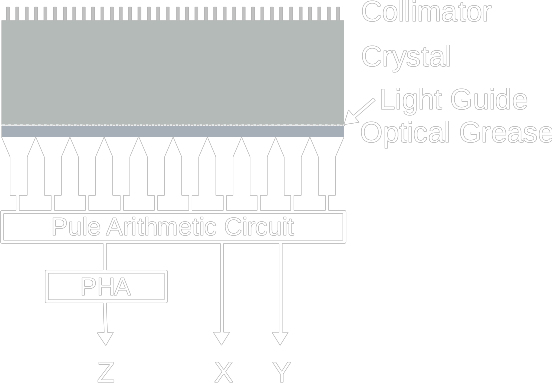
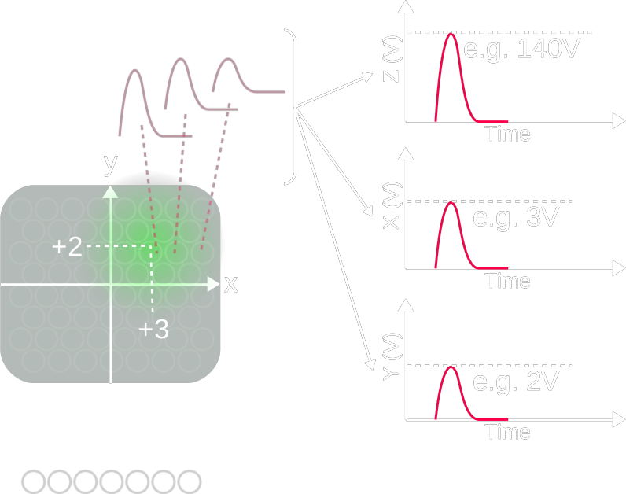

| Pb Shield |
Role
|
||||||||||||
| Collimator |
Energy Variant
Purpose Variant
:( Incorrect Collimator
|
||||||||||||
| Scintillator |
Material
|
| Mechanism |

 Energy Spectrum
|
| Correction |
Energy
Non-linearity
= correct for spatial distortion
Steps
Uniformity
For SPECT
Centre of Rotation (COR)
Attenuation |
| Properties |
Spatial Resolution
:( low incoming γ E
:( thicker scintillator Efficiency / Sensitivity
:) thicker scintillator
Energy Resolution
:( variation in scinillation
:( variation in PMT (photocathode/diodes) :( non-uniformity Dead Time
|
| QA |
Intrinsic Energy Resolution
= FWHM / photopeak centre energy × 100%
Source → Tc-99m or Co-57 point source centered at 5 × UFOV
< 20 kcount/s peak channel total > 10 kcount
Extrinsic Spatial Resolution
Intrinsic Spatial Linearity
Intrinsic Uniformity
External Sensitivity
|
| Artefact |
PMT defect → circular cold defect crystal crack → irregular, focal, cold centre, hot edge |